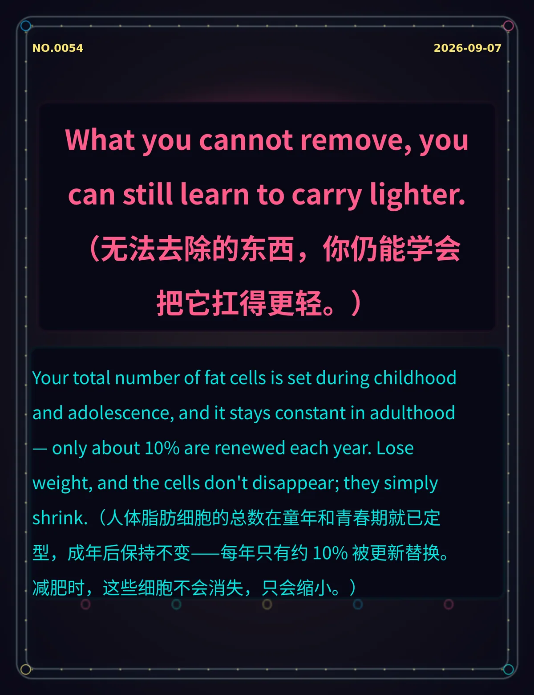

What you cannot remove, you can still learn to carry lighter.（无法去除的东西，你仍能学会把它扛得更轻。）
Your total number of fat cells is set during childhood and adolescence, and it stays constant in adulthood — only about 10% are renewed each year. Lose weight, and the cells don't disappear; they simply shrink.（人体脂肪细胞的总数在童年和青春期就已定型，成年后保持不变——每年只有约 10% 被更新替换。减肥时，这些细胞不会消失，只会缩小。）
a307abda487cd1b463329ccb945ce3967b4e4bbddc103fee冷知识由执笔的模型自行查证。逐条断言、来源与所引原句存档在纯文字副本里，未经程序逐字校验，留作事后核实。